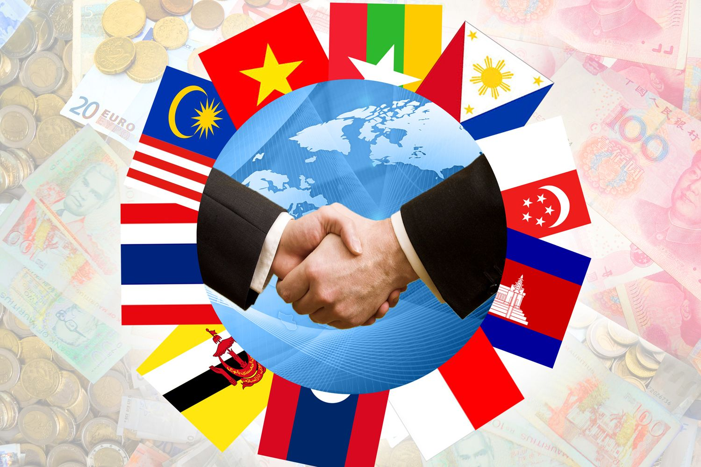
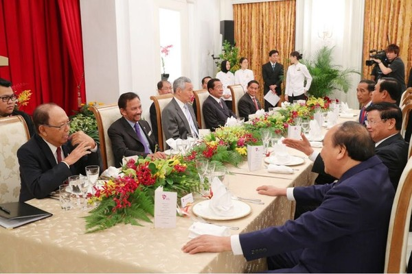
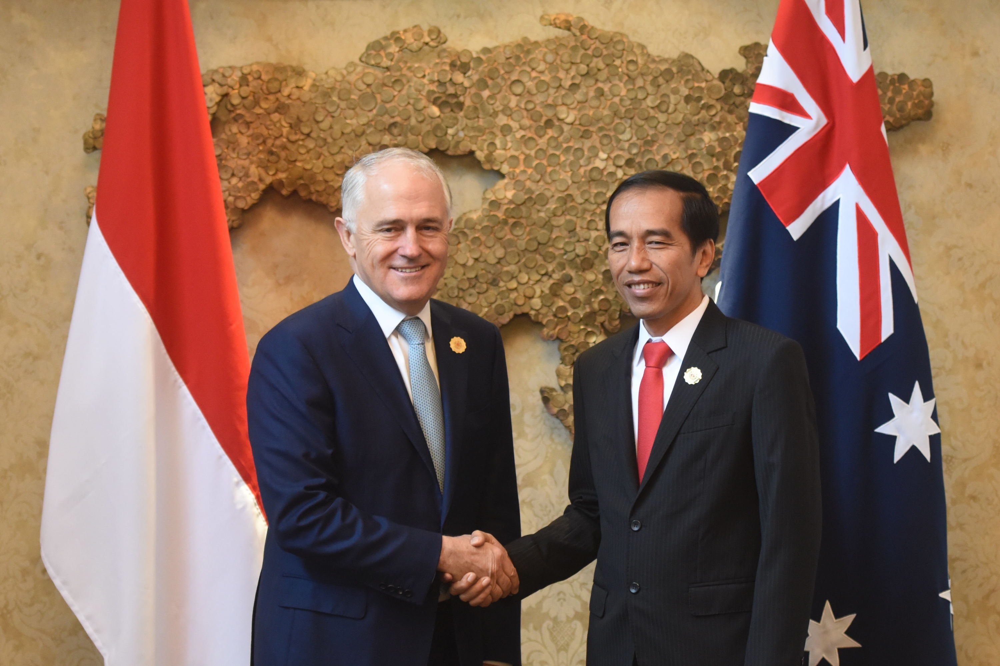
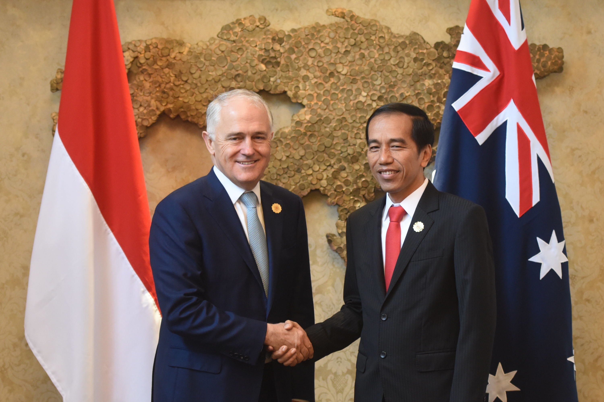

.png)
Web kolaborasi TIK,PKN,IPS
Selamat datang di web PPKN! Disini saya akan menjelaskan tentang kerjasama-kerjasama antar negara.
Negara-negara melakukan 3 jenis kerjasama yaitu kerjasama bilateral, regional, dan multilateral.
Kerjasama Bilateral adalah kerjasama antara dua negara untuk mencapai suatu tujuan dalam bidang ekonomi, politik, budaya, ataupun pertahanan.
Kerjasama ini memiliki prinsip saling menguntungkan dan setara. Jenis-jenis kerjasama bilateral antara lain:
- Ekonomi: Membuka pasar ekspor, mengundang investasi asing, menciptakan lapangan kerja, dan meningkatkan pendapatan negara.
- Sosial dan Budaya: Meningkatkan pemahaman lintas budaya melalui program pertukaran budaya dan pendidikan.
- Politik dan Keamanan: Memperkuat hubungan diplomatik dan menciptakan stabilitas politik, mendukung upaya perdamaian regional.
- Pendidikan dan Teknologi: Meningkatkan akses terhadap pendidikan berkualitas dan teknologi melalui program beasiswa, riset bersama, dan pelatihan.


Kerjasama Regional adalah bentuk kerja sama yang dilakukan oleh beberapa negara dalam satu kawasan geografis tertentu untuk mencapai suatu tujuan dalam bidang politik, ekonomi, sosial, budaya, dan keamanan.
.Jenis-jenis kerjasama Regional antara lain:
- Kerjasama Ekonomi: Bidang ini mencakup perjanjian perdagangan, peningkatan investasi, dan pengembangan ekonomi bersama antar negara.
- Kerjasama Keamanan: Kerjasama ini bertujuan menjaga stabilitas keamanan kawasan dengan menangani masalah- masalah seperti terorisme, narkoba, dan konflik antar negara.
- Kerjasama Sosial dan Budaya: Bidang ini meliputi pertukaran budaya, pendidikan, pariwisata, dan perlindungan hak asasi manusia. F
- Kerjasama Lingkungan: Negara- negara bekerja sama dalam hal perlindungan lingkungan hidup, perubahan iklim, dan pengelolaan sumber daya alam bersama
Kerjasama Multilateral adalah kerjasama yang melibatkan tiga negara atau lebih untuk kepentingan bersama yang bersifat global.
Kerjasama ini biasanya bekerjasama untuk mencapai tujuan dalam bidang ekonomi, kesehatan, keamanan, dan lingkungan.
Berikut ini adalah organisasi dan forum kerjasama multilateral:
- Perserikatan Bangsa- Bangsa (PBB): Fokus pada perdamaian dan keamanan internasional, hak asasi manusia, dan pembangunan.
- Organisasi Kesehatan Dunia (WHO): Berfokus pada kesehatan global dan penanganan wabah penyakit.
- World Trade Organization (WTO): Mengatur perdagangan internasional untuk menciptakan sistem perdagangan yang adil.
- Association of Southeast Asian Nations (ASEAN): Organisasi negara-negara Asia Tenggara yang bekerja sama dalam bidang ekonomi, politik, dan sosial-budaya.
Indonesia bekerjasama dengan Australia dalam bidang Sustainable Development Goals (SDGs). Salah satu kerjasama Indonesia dengan Australia dalam bidang ini adalah Pendidikan Berkualitas.
Kerjasama ini bertujuan untuk saling membantu dan memberi kualitas pendidikan yang bagus untuk satu dengan yang lain.
Indonesia dan Australia membuat berbagai macam program dan cara untuk bantu meningkatkan sistem pendidikan kedua negara tersebut seperti Australia award scholarship, Australia-Indonesia Comprehensive Economic Partnership Agreement (IA-CEPA), Pengembangan Kurikulum dan Pelatihan Guru, dan lain sebagainya.
Dampak dari kerjasama ini ialah:
- Akses pendidikan yang lebih baik: Program beasiswa dan pelatihan memberikan kesempatan bagi lebih banyak orang untuk memperoleh pendidikan berkualitas.
- Peningkatan kualitas pengajaran: Pelatihan untuk guru dan peningkatan fasilitas pendidikan membantu menciptakan lingkungan belajar yang lebih baik.
 

Selamat datang di web IPS! Disini saya akan menjelaskan tentang apa itu SDGs dan tentang kerja sama antar negara.
SDGs memiliki 17 goals dan indikatornya ialah
1.Tanpa Kemiskinan: Menghapuskan segala bentuk kemiskinan di seluruh dunia, terutama untuk kelompok rentan, dengan memberikan akses pada perlindungan sosial dan sumber daya ekonomi. Masalah ini dapat diukur sudah tercapai atau tidaknya pada persentase penduduk yang hidup, di bawah garis kemiskinan nasional.
2.Tanpa Kelaparan: Mengakhiri kelaparan, mencapai ketahanan pangan, meningkatkan gizi, dan mempromosikan pertanian berkelanjutan. Masalah ini dapat diukur sudah tercapai atau tidaknya pada jumlah keseluruhan kekurangan gizi pada anak-anak dan produksi pangan per kapitanya.
3.Kesehatan yang Baik dan Kesejahteraan: Menjamin kehidupan yang sehat dan meningkatkan kesejahteraan untuk semua usia, termasuk penurunan angka kematian ibu, bayi, dan penyakit menular. Masalah ini dapat diukur sudah tercapai atau tidaknya pada angka kematian ibu melahirkan.
4.Pendidikan Berkualitas: Menjamin akses pendidikan inklusif, merata, dan berkualitas untuk semua serta mendorong kesempatan belajar seumur hidup. Masalah ini dapat diukur sudah tercapai atau tidaknya pada angka partisipasi sekolah dasar dan menengah dan proporsi guru bersertifikasi.
5.Kesetaraan Gender: Mencapai kesetaraan gender dan memberdayakan perempuan serta anak perempuan dengan menghapuskan diskriminasi dan kekerasan berbasis gender. Masalah ini dapat diukur sudah tercapai atau tidaknya pada Proporsi perempuan di parlemen dan prevalensi kekerasan terhadap perempuan.
6.Air Bersih dan Sanitasi: Menjamin akses universal terhadap air bersih dan sanitasi yang aman serta pengelolaan sumber daya air yang berkelanjutan. Masalah ini dapat diukur sudah tercapai atau tidaknya pada Proporsi populasi yang memiliki akses ke air bersih dan akses ke fasilitas sanitasi yang layak.
7.Energi Bersih dan Terjangkau: Memastikan akses energi yang terjangkau, andal, berkelanjutan, dan modern untuk semua. Masalah ini dapat diukur sudah tercapai atau tidaknya pada persentase populasi dengan akses ke energi listrik dan proporsi energi terbarukan dalam total konsumsi energi.
8.Pekerjaan Layak dan Pertumbuhan Ekonomi: Mendukung pertumbuhan ekonomi inklusif dan berkelanjutan, menciptakan lapangan kerja yang layak, dan melindungi hak pekerja. Masalah ini dapat diukur sudah tercapai atau tidaknya pada tingkat pengangguran dan pertumbuhan PDB per kapita.
9.Industri, Inovasi, dan Infrastruktur: Membangun infrastruktur yang tangguh, mendukung industrialisasi inklusif, dan mendorong inovasi. Masalah ini dapat diukur sudah tercapai atau tidaknya pada Kepadatan jaringan jalan raya dan pengeluaran untuk penelitian dan pengembangan.
10.Mengurangi Kesenjangan: Mengurangi ketimpangan di dalam dan antar negara, termasuk akses yang setara pada peluang ekonomi dan sosial. Masalah ini dapat diukur sudah tercapai atau tidaknya pada rasio pendapatan antara kelompok terkaya dan termiskin.
11.Kota dan Komunitas Berkelanjutan: Menciptakan kota yang inklusif, aman, tangguh, dan berkelanjutan, dengan perencanaan tata kota yang ramah lingkungan. Masalah ini dapat diukur sudah tercapai atau tidaknya pada Proporsi populasi perkotaan yang tinggal di permukiman kumuh dan rencana pengelolaan risiko bencana.
12.Konsumsi dan Produksi yang Bertanggung Jawab: Mendorong pola konsumsi dan produksi yang berkelanjutan, termasuk pengelolaan limbah dan sumber daya. Masalah ini dapat diukur sudah tercapai atau tidaknya pada jejak material per kapita dan tingkat daur ulang limbah domestik.
13.Penanganan Perubahan Iklim: Mengambil tindakan segera untuk melawan perubahan iklim dan dampaknya melalui adaptasi dan mitigasi. Masalah ini dapat diukur sudah tercapai atau tidaknya pada emisi gas rumah kaca per kapita.
14.Ekosistem Lautan: Melindungi dan melestarikan ekosistem laut dan sumber daya kelautan untuk mendukung pembangunan berkelanjutan. Masalah ini dapat diukur sudah tercapai atau tidaknya pada proporsi stok ikan dalam batas berkelanjutan dan luas kawasan konservasi laut.
15.Ekosistem Daratan: Mengelola hutan secara berkelanjutan, melindungi keanekaragaman hayati, dan memulihkan ekosistem yang terdegradasi. Masalah ini dapat diukur sudah tercapai atau tidaknya pada luas tutupan hutan dan proporsi spesies yang terancam punah
16.Perdamaian, Keadilan, dan Kelembagaan yang Kuat: Mendorong masyarakat yang damai dan inklusif, memastikan akses keadilan, serta membangun institusi yang efektif dan bertanggung jawab. Masalah ini dapat diukur sudah tercapai atau tidaknya pada tingkat kekerasan domestik dan proporsi penduduk yang memiliki akta kelahiran.
17.Kemitraan untuk Tujuan: Memperkuat kerja sama global melalui kemitraan antar negara untuk mencapai tujuan pembangunan berkelanjutan. Masalah ini dapat diukur sudah tercapai atau tidaknya pada volume bantuan pembangunan resmi (ODA) dan akses teknologi modern di negara berkembang.
ISU-ISU GLOBAL: Saya memilih penanganan Perubahan Iklim untuk dikaitkan dengan isu-isu global karena perubahan iklim adalah ancaman global terbesar yang mempengaruhi seluruh aspek kehidupan manusia dan planet. Kenaikan suhu global akibat emisi gas rumah kaca telah memicu gelombang panas ekstrem, badai yang lebih dahsyat, dan pencairan es di kutub yang menyebabkan peningkatan permukaan laut, mengancam keberadaan negara-negara kepulauan kecil seperti Maladewa dan kota besar seperti Jakarta. Selain itu, perubahan pola hujan memicu krisis air di banyak wilayah, sementara kegagalan panen akibat cuaca ekstrem meningkatkan risiko kelaparan, terutama di negara-negara berkembang. Habitat alami juga rusak, mengancam keanekaragaman hayati, termasuk pemutihan karang dan hilangnya spesies seperti beruang kutub. Dampaknya meluas ke bidang kesehatan dengan penyebaran penyakit tropis seperti malaria, serta memaksa jutaan orang menjadi pengungsi iklim karena kehilangan tempat tinggal akibat bencana alam. Melalui aksi global yang mendesak seperti transisi ke energi terbarukan, pengurangan emisi, dan pendanaan iklim untuk negara berkembang SDGs 13 menjadi landasan penting untuk melawan krisis ini dan memastikan masa depan yang berkelanjutan bagi semua.
Negara-negara melakukan 3 jenis kerjasama yaitu kerjasama bilateral, regional, dan multilateral.
Kerjasama Bilateral adalah kerjasama antara dua negara untuk mencapai suatu tujuan dalam bidang ekonomi, politik, budaya, ataupun pertahanan. Contoh konkretnya ialah:
- Indonesia dan Jepang: Melalui Japan International Cooperation Agency (JICA), Jepang memberikan bantuan pembangunan untuk proyek infrastruktur ramah lingkungan di Indonesia, seperti MRT Jakarta (SDGs 9: Industri, Inovasi, dan Infrastruktur).
- AS dan Kenya: Melalui Power Africa Initiative, Amerika Serikat mendukung pengembangan energi terbarukan di Kenya untuk meningkatkan akses listrik (SDGs 7: Energi Bersih dan Terjangkau).
Kerjasama Regional adalah bentuk kerja sama yang dilakukan oleh beberapa negara dalam satu kawasan geografis tertentu untuk mencapai suatu tujuan dalam bidang politik, ekonomi, sosial, budaya, dan keamanan. Contoh konkretnya ialah:
- ASEAN: Melalui ASEAN Agreement on Transboundary Haze Pollution, negara-negara Asia Tenggara bekerja sama mengurangi polusi lintas batas akibat kebakaran hutan (SDGs 13: Penanganan Perubahan Iklim).
- Uni Afrika: Inisiatif Comprehensive Africa Agriculture Development Programme (CAADP) mendukung ketahanan pangan dan pertanian berkelanjutan di negara-negara Afrika (SDGs 2: Tanpa Kelaparan).
Kerjasama Multilateral adalah kerjasama yang melibatkan tiga negara atau lebih untuk kepentingan bersama yang bersifat global. Kerjasama ini biasanya bekerjasama untuk mencapai tujuan dalam bidang ekonomi, kesehatan, keamanan, dan lingkungan. Contoh konkretnya ialah:
- Perjanjian Paris (Paris Agreement): Sebuah komitmen multilateral untuk mengurangi emisi gas rumah kaca dan menjaga kenaikan suhu global di bawah 2°C (SDGs 13: Penanganan Perubahan Iklim).
- Program PBB untuk Pangan Dunia (World Food Programme/WFP): Melibatkan banyak negara untuk mengatasi kelaparan di daerah rawan konflik atau bencana (SDGs 2: Tanpa Kelaparan).
Negara-negara harus bekerja sama untuk mengatasi permasalahan dunia seperti perubahan iklim dan kesenjangan secara bertanggung jawab. Kolaborasi antar negara memungkinkan terjadinya pertukaran sumber daya, wawasan, dan keahlian untuk mewujudkan tujuan global. Negara-negara mendapatkan dukungan dari negara-negara kaya untuk mengakses air bersih (#6), dan ASEAN bertujuan untuk mencapai pertumbuhan ekonomi yang adil (#8). Secara global, melalui PBB, pakta seperti Perjanjian Paris membentuk struktur utama untuk mencapai Tujuan Pembangunan Berkelanjutan 13, yang memprioritaskan penanggulangan perubahan iklim. Tindakan khusus seperti menyiapkan peralatan, memberikan uang, memperkuat lembaga-lembaga, dan kerja sama transdisipliner sangat penting dalam menghubungkan upaya bersama untuk mencapai tujuan PBB, yang menunjukkan skema yang berani untuk meningkatkan jangkauan global.
Sumber-sumber:
https://sdgs.bappenas.go.id/metadata-indikator-sdgs/
https://sdgs.un.org/goals
https://www.canva.com/design/DAGVfhxl-lw/alVQIk0wNpD7QXRbyk1c5Q/edit
https://www.canva.com/design/DAGWJufpqds/5nTVA-ub0p67-rEDIDKIvw/edit
https://www.canva.com/design/DAGWg9Dlhac/N49A-YjMsVPnXaGg1ctBOw/edit